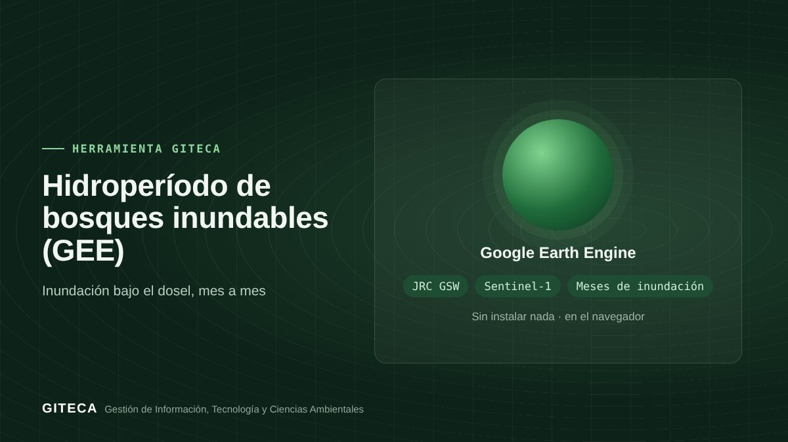

¿Cuántos meses al año se inunda tu bosque?
App de Google Earth Engine que estima, para el año que elijas, cuántos meses se inunda el bosque bajo el dosel, con radar Sentinel-1 y agua superficial de JRC.
Abrir la app en Earth Engine ↗Gratis, sin instalar nada.

¿Cuándo conviene extraer la madera o abrir un camino en un bosque inundable?
En los bosques de várzea e igapó, el calendario de la inundación define cuándo se puede trabajar, transportar o construir. Esta app combina el agua superficial de JRC con el radar Sentinel-1, que detecta el agua bajo el dosel, para estimar cuántos meses se inunda cada sector en el año elegido.
Antes y ahora
El proceso de siempre
- Revisar imágenes de distintas épocas, muchas con nubes.
- Interpretar a mano dónde hay agua bajo los árboles.
- Depender de la memoria local para el calendario.
Con la herramienta
- Dibujas tu área y eliges el año.
- La app compara cada mes con las aguas bajas (agosto–octubre) y estima los meses inundados.
- Ves el mapa de meses inundados y la fracción del área inundada mes a mes.
Tiempos de referencia estimados por el equipo GITECA; varían según el tamaño del área y la experiencia del usuario.
Qué hace
- Mapa de meses inundados bajo el dosel (Sentinel-1).
- Hectáreas con al menos un mes de inundación y agua abierta frecuente (JRC).
- Gráfico de la fracción del área inundada por mes.
- Ficha descargable en CSV, GeoJSON, KML o SHP.
Para quién es
Empieza en 3 pasos
- Abre la app en el navegador.
- Dibuja tu área y elige el año.
- Revisa el mapa y el gráfico mensual de inundación.
Hidroperíodo de bosques inundables (GEE)Gratis, sin instalar nada.
Abrir la app en Earth Engine ↗
Ten en cuenta: El umbral de inundación es referencial y conviene calibrarlo con datos de campo. ¿Necesitas adaptarla a tu proyecto o capacitar a tu equipo? Escríbenos.